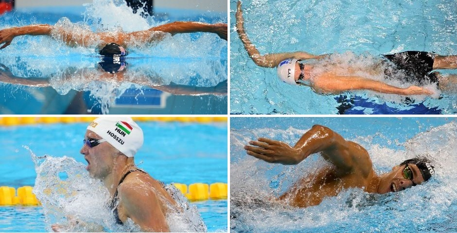

Estilos de Natación

En la escuelita de natación los alumnos aprenden progresivamente los estilos oficiales, mejorando su técnica y coordinación.
| Estilo | Nivel recomendado | Principal beneficio |
|---|---|---|
| Libre | Principiante | Desarrolla velocidad y resistencia. |
| Espalda | Intermedio | Mejora la postura y la coordinación. |
| Pecho | Intermedio | Fortalece piernas y brazos. |
| Mariposa | Avanzado | Incrementa la fuerza y la potencia. |